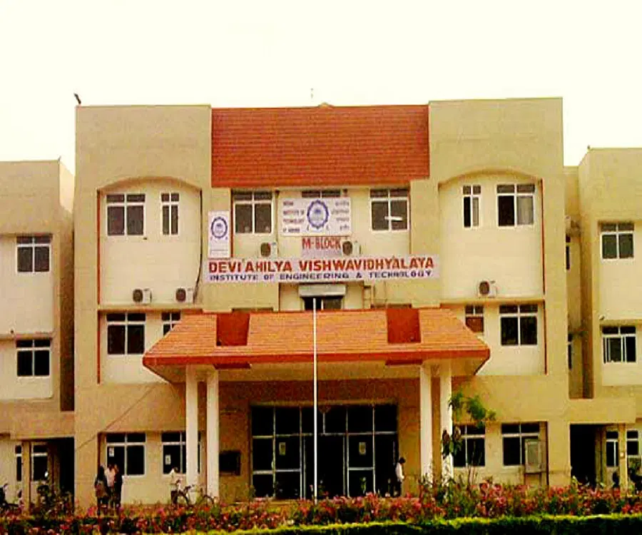

INSTITUTE OF ENGINEERING AND TECHNOLOGY
IET DAVV
INDORE
About Us
About IET
Devi Ahilya University, Indore has been a leading University of central India. The University within the framework of its UTD opened aself-financing engineering Institute namedInstitute of Engineering & Technology (IET).It started its academic journey with glorious dreams on04 September 1996. It has been popularly known as IET-DAVV.
IET was started with a total intake of 90 students in three branches of Bachelor of Engineering (BE) - Mechanical Engineering, Computer Engineering and Electronics & Instrumentation Engineering having 30 students each. The first batch of these 90 students started their engineering career while studying in the classrooms of the sister UTD- School of Computer Science (SCS) and had got initially financial support from the other UTD- International Institute of Professional Studies (IIPS).
It is an approved Institution by All India Council for Technical Education (AICTE), New Delhi, Government of Madhya Pradesh and University Grants Commission (UGC). IET is academically autonomous with flexible and modern curriculum in all branches of engineering. It is fully self-financing Institute offering BE programmes in six branches. Recently, AICTE has approved 180 additional seats making total intake of 540 students per year.
IET became PG Institute in 2002 and presently it is conducting ME Programmes with six specializations. In year 2006, MSc program in Applied Mathematics was also started.
PhD programme is also offered in all disciplines of BE/ME Programmes & all relevant areas of interest. Research component of IET is also strong while a number of research scholars from other reputed organizations such as SGSITS, AICTE, RRCAT, NRCS, IIITA, etc. have registered for PhD programme in various departments of IET. All these UG/PG/Doctoral programmes come under Faculty of Engineering of DAVV.
In a short span of fourteen years, IET has progressed with leaps & bounds and has made many landmarks.
